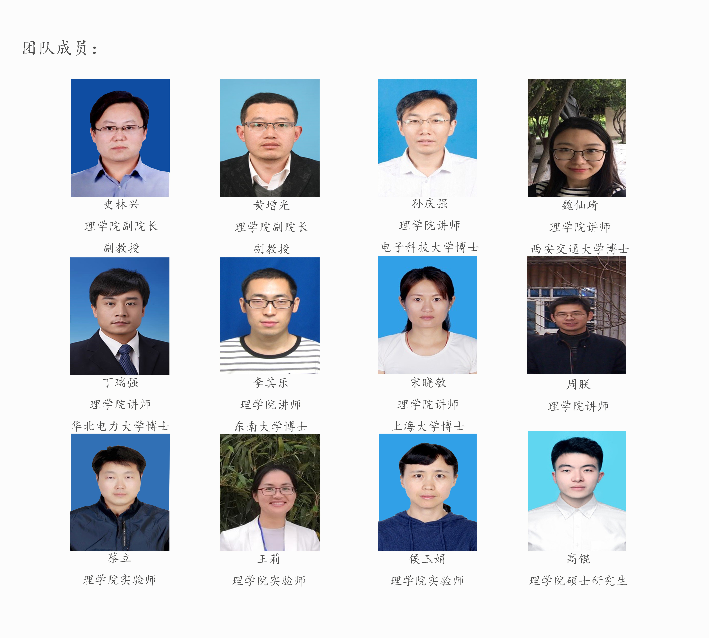
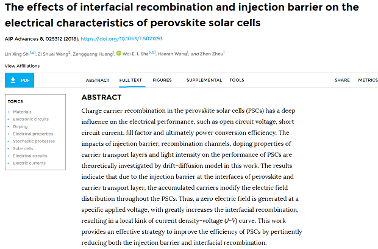
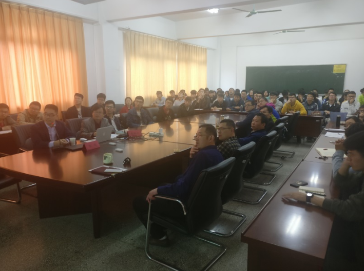
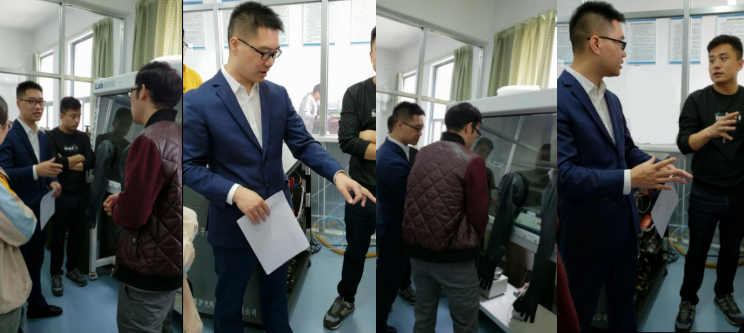

团队简介

光伏材料与器件科研平台立足于淮海工学院的办学定位，面向国际上能源科学技术发展前沿，及解决能源问题的重大战略需求，围绕新能源技术开发，
而开展的新能源基础理论研究和应用基础研究的专业科学研究技术平台。近年来，在中央与地方共建项目的大力支持下，整合了校内优势资源，
基础设施建设、人才培养和管理服务体系进一步完善。科研技术水平、团队力量组建都占有绝对优势。平台现有人员12人，博士7人，硕士4人，实验师1人。
光伏材料与器件科研平台, 具有优越的试验研究条件和课题来源，为培养创新型人才提供了广阔的发展空间和舞台。
光伏材料与器件科研平台现有的大型仪器设备有：PEALD原子层沉积系统、高分辨磁控溅射仪、
纳米结构刻蚀系统、手套箱、阻抗谱分析仪、纯水设备、清洗设备、水浴系统、太阳电池测试系统以及计算工作站等。
学术科研

史林兴教授在国际知名期刊AIP Advances上发表题为界面复合与注入势垒对钙钛矿太阳电池电学特性的影响的署名文章，文章地址：https://doi.org/10.1063/1.5021293
近日，淮海工学院理学院光伏材料与器件科研平台史林兴教授，采用扩散-漂移模型对结构为ITO/TiO2/Perovskite/Spiro-OMeTAD/Au的平面型
钙钛矿电池进行了数值计算，研究了注入势垒、载流子复合、载流子传输层掺杂浓度以及光照强度对钙钛矿太阳电池电学特性的影响。并且深入的分析、阐述
了钙钛矿太阳电池J-V曲线存在的反常现象——回滞和扭曲现象。作者提出引起钙钛矿太阳电池的J-V曲线回滞现象主要有4种原因：慢瞬态电容电流、动态载
流子诱捕与释放、离子移动引起的能带弯曲和铁电极化效应。而S形（S-shaped concave deformation）J-V曲线的形成是由载流子的传输受
限和界面复合的共同作用造成的。
最新资讯

5月6日至7日，香港大学张鸿博士应邀访问理学院，开展学术交流活动。
5月6日，张鸿在理学院作题为Ligand-Engineered Perovskites for Achieving High-Performance and Stable Solar Cells的专题报告，报告会由理学院副院长史林兴主持。
报告中，张鸿从新型太阳电池的基本概念出发，详细分析了低温制备高效稳定钙钛矿太阳电池的相关技术，阐明了有机配体在钙钛矿成膜过程中的作用机制以及高效、稳定钙钛矿器件的后处理方法。整个会场气氛热烈，师生踊跃交流发言。张博士与理学院师生探讨了新型钙钛矿太阳电池的最新研究进展与发展方向，扩展了师生科研思路；张博士同时也介绍了香港高校研究生申请的相关经验与流程，拓宽了同学们的视野，提高了大家申请国外高校研究生的积极性。

5月7日上午，香港大学张鸿博士参观了理学院光伏材料与器件科研平台。
参观期间，张鸿与团队成员就科研合作方式进行了广泛交流与讨论，初步达成合作意向，为加强理学院创新团队建设、推动学科快速发展、深化与境外课题组的交流合作打下了良好的基础。
联系我们